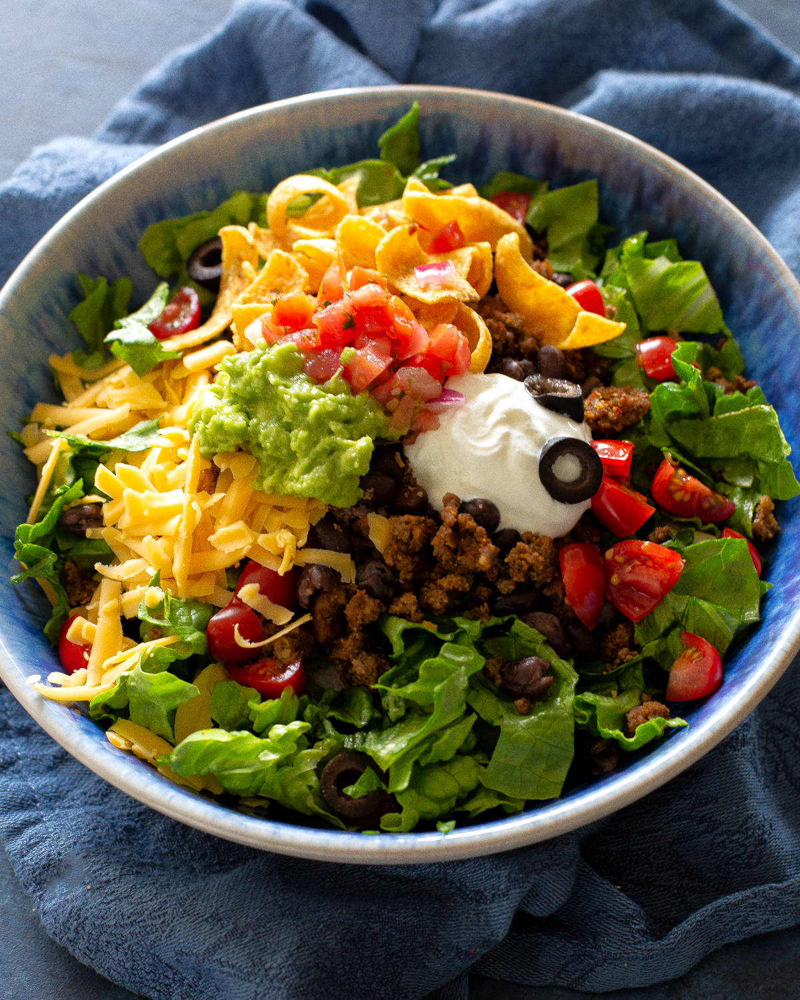

Bringing all the punch and spice of the land south of the border, taco salad will surely become a staple of your kitchen.
With just the right amount of crunch, spice and creaminess, this is a dish those you love will certainly adore.
Ingredients
- Tortilla Chips
- Ground Hamburger Meat
- Cherry Tomatoes
- Black Olives
- Sour Cream
- Salsa
- Chopped Lettuce
- Shredded Cheese
- Taco Seasoning
- Black Beans
Steps
- Cook and break up ground beef.
- While beef is cooking, prepare lettuce, tomatos, olives, cheese, and other ingredients by putting them in bowls ready to be served
- When meat has browned, add taco seasoning
- Add Black Beans
- To assemble, place chips as a bed on the plate, and meat on top. then add sour cream, salsa, olives and tomatos. place blanket of lettuce on top followed by a sprinkle of cheese.
- Enjoy